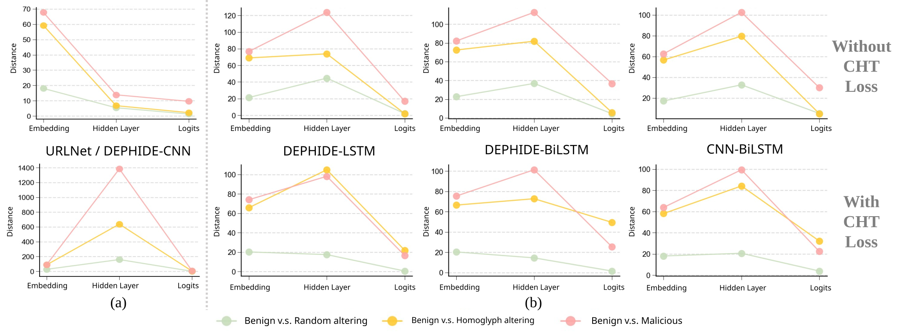

On-device SMS security agents must operate under strict latency constraints to intercept phishing links in real time, and therefore rely on lightweight classifiers—rather than large foundation models—as their decision-making tool. However, existing lightweight classifiers remain highly vulnerable to homoglyph attacks, constituting a known bottleneck on the tool side. We trace this vulnerability to a Representation-Decision Paradox: discriminative signals induced by homoglyph perturbations are detectable at the embedding layer, yet dissipate at the decision layer due to architecture-specific inductive biases (over-smoothing in CNNs, decision inertia in RNNs). To address this, we propose Contrastive Homoglyph Tolerance (CHT) loss, which substantially improves classifier sensitivity to homoglyph attacks on sequential architectures while preserving tolerance to random perturbations; relative to a 2B-parameter general-purpose guardrail model, our lightweight tool also reduces end-to-end inference latency by up to 22%. Whether mitigating this tool-side bottleneck suffices to ensure reliable behavior of the overall agent system, however, has not been systematically examined. We integrate the repaired tool into a real agent-tool pipeline, evaluating three small language models from distinct model families (Llama-3.2, Gemma-4, Qwen2.5) as hosts, and cross-validate against three off-the-shelf industry guardrail models. Results show that improving tool quality alone is insufficient to guarantee end-to-end agent reliability: on Qwen2.5, agent safety improves markedly with tool quality, whereas on Llama-3.2 and Gemma-4, the agent escalates tool-cleared messages as fraud irrespective of the tool backend in use. This finding reveals substantial, systematic differences in how host models incorporate tool outputs into their final decisions, exposing a blind spot in existing agent evaluation practices concerning end-to-end reliability.
Lightweight URL classifiers reach ~98% accuracy on standard phishing detection, yet catch only
7–10% of homoglyph URLs (e.g., apple.com → аpple.com
with a Cyrillic “а”). To find where this fails, we track the ℓ2 distance
between a benign URL and (I) its random variant, (II) its homoglyph variant, and (III) a malicious URL,
at the embedding, hidden, and logit stages.
The failure is in decision, not perception. The paradox appears in every architecture we tested, through two different mechanisms: CNN pooling over-smooths the perturbation as spatial noise, while RNNs show decision inertia that locks the output to “benign”.

Distances are comparable only within a panel; what matters is the ratio of (II) to (III). Top: standard training, where (II) collapses at the logits. Bottom: with CHT loss, sequential architectures keep (II) at or above (III) through the decision layer.
CHT casts two seemingly opposing goals into a training-time regularizer on the classifier's predicted distribution Pθ(y|x). For a benign URL, we generate a homoglyph variant xhomo and a random, non-homoglyph variant xrand:
Lhomo = max(0, m − DKL(Pθ(y|xbenign) || Pθ(y|xhomo)))
A hinge on the KL divergence, with margin m to keep the divergence bounded and training stable.
Lrand = DKL(Pθ(y|xbenign) || Pθ(y|xrand))
Prevents the model from treating every character substitution as an attack.
Ltotal = LBCE + α Lhomo + β Lrand
No extra inference-time cost. Perturbed URLs receive no hard label; CHT only constrains the output distribution relative to the unperturbed URL.
| Model | Lhomo | Lrand | Base Dataset | Homoglyph | Random | |||
|---|---|---|---|---|---|---|---|---|
| Acc | Prec. | Rec. | F1 | Acc | Acc | |||
| DEPHIDE-LSTM | 98.17 | 97.25 | 97.96 | 97.60 | 9.64 | 88.83 | ||
| ✓ | 98.08 | 97.46 | 97.49 | 97.48 | 96.51 (+86.87) | 93.46 (+4.63) | ||
| ✓ | ✓ | 98.02 | 97.68 | 97.08 | 97.38 | 96.45 (+86.81) | 98.66 (+9.83) | |
| DEPHIDE-BiLSTM | 97.99 | 96.30 | 98.50 | 97.38 | 9.18 | 89.53 | ||
| ✓ | 98.15 | 97.19 | 97.94 | 97.57 | 96.61 (+87.43) | 91.50 (+1.97) | ||
| ✓ | ✓ | 98.18 | 98.14 | 97.04 | 97.59 | 96.30 (+87.12) | 98.97 (+9.44) | |
| CNN-BiLSTM | 98.16 | 96.58 | 98.65 | 97.60 | 7.40 | 90.47 | ||
| ✓ | 98.15 | 96.88 | 98.28 | 97.57 | 96.67 (+89.27) | 87.54 (−2.93) | ||
| ✓ | ✓ | 98.35 | 97.82 | 97.82 | 97.82 | 96.53 (+89.13) | 98.87 (+8.40) | |
Baselines (standard BCE training) in gray; full CHT loss highlighted. Changes relative to the baseline in parentheses. Pure CNNs (URLNet, DEPHIDE-CNN) do not benefit, since pooling has already erased the signal.
We plug the classifier into an SMS safety agent. The host LLM must call check_link_safety,
which returns {is_malicious, confidence, raw_logit}, and then choose
OPEN_LINK, IGNORE, or MARK_SUSPICIOUS.
We test three hosts (Llama-3.2-3B, Gemma-4-E4B, Qwen2.5-3B) × three classifiers with and without CHT,
plus three off-the-shelf guardrails as alternative backends, on 400 SMS episodes per configuration.
Metrics (lower is better): ASR, homoglyph → OPEN_LINK (attack succeeds);
FBR, random variant → blocked; Benign FPR, benign → blocked.
| Host | Architecture | CHT | ASR ↓ | FBR ↓ | Benign FPR ↓ | Compliance |
|---|---|---|---|---|---|---|
| Llama-3.2 3B | No tool | – | 0.00 | 1.00 | 1.00 | – |
| DEPHIDE-LSTM | 0.01 | 0.97 | 0.90 | 1.000 | ||
| ✓ | 0.01 | 0.95 | 0.89 | 1.000 | ||
| DEPHIDE-BiLSTM | 0.01 | 0.92 | 0.89 | 1.000 | ||
| ✓ | 0.01 | 0.96 | 0.90 | 1.000 | ||
| CNN-BiLSTM | 0.02 | 0.95 | 0.85 | 1.000 | ||
| ✓ | 0.01 | 0.95 | 0.87 | 0.998 | ||
| Gemma-4 E4B | No tool | – | 0.00 | 0.99 | 0.93 | – |
| DEPHIDE-LSTM | 0.00 | 0.99 | 0.95 | 1.000 | ||
| ✓ | 0.00 | 0.98 | 0.93 | 1.000 | ||
| DEPHIDE-BiLSTM | 0.00 | 1.00 | 0.93 | 0.998 | ||
| ✓ | 0.00 | 1.00 | 0.95 | 0.998 | ||
| CNN-BiLSTM | 0.00 | 1.00 | 0.96 | 1.000 | ||
| ✓ | 0.00 | 0.99 | 0.97 | 1.000 | ||
| Qwen2.5 3B | No tool | – | 0.00 | 0.99 | 0.97 | – |
| DEPHIDE-LSTM | 0.31 | 0.52 | 0.52 | 1.000 | ||
| ✓ | 0.03 | 0.50 | 0.52 | 0.998 | ||
| DEPHIDE-BiLSTM | 0.31 | 0.59 | 0.59 | 0.998 | ||
| ✓ | 0.01 | 0.47 | 0.49 | 0.995 | ||
| CNN-BiLSTM | 0.27 | 0.68 | 0.63 | 0.998 | ||
| ✓ | 0.01 | 0.57 | 0.63 | 0.998 |
tool-following host tool-overriding hosts. Without a tool, all three hosts block nearly every message (Benign FPR 0.93–1.00), even though benign and random episodes use neutral-toned templates. Message tone alone does not make any host open a link, so any movement away from this baseline comes from the tool.
The agent isn't more cautious with CHT. It follows the tool, and CHT makes the tool right.
This is not an artifact:
MARK_SUSPICIOUS (escalated as fraud), not IGNORE.Relative to a 2B-parameter guardrail (ShieldGemma), our lightweight CHT classifier cuts end-to-end latency by 22% on Llama-3.2 and 18% on Qwen2.5.
| Host | No-Tool | ShieldGemma (2B) | Ours (CHT) | Δ vs. ShieldGemma |
|---|---|---|---|---|
| Llama-3.2 3B | 1,941 | 5,808 | 4,531 | −1,277 (−22%) |
| Qwen2.5 3B | 2,045 | 5,832 | 4,803 | −1,029 (−18%) |
| Gemma-4 E4B | 32,652 | 40,928 | 42,526 | +1,598 (+4%, within noise) |
Mean latency in ms over 100 episodes, CPU-only inference on a server (not a phone). Only relative differences should be read from this table.
@inproceedings{lee2026beyond,
author = {Lee, Cheng-Che and Cheng, Chia-Pin and Chang, Hsu-Sheng and Chou, Chia-Lin},
title = {Beyond Tool Accuracy: End-to-End Reliability of On-Device {SMS} Agents Under Homoglyph Attacks},
booktitle = {Third Workshop on Agents in the Wild: Safety, Security, and Beyond},
year = {2026},
url = {https://openreview.net/forum?id=k0tisYvu30}
}